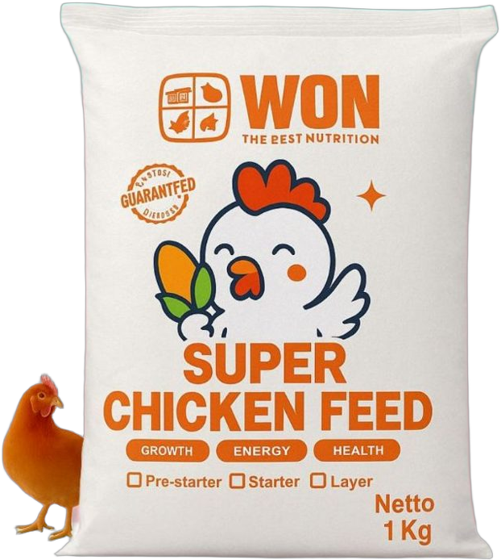

Starter feed
A considered start
A crumble / pellet texture for the starter stage. Select the pack size around your flock’s needs.
1 kg25 kg
View product Starter and layer feed from Window of Nature. Choose the feed type for the stage, then the pack size for your flock.


A crumble / pellet texture for the starter stage. Select the pack size around your flock’s needs.
A fine mash feed for the laying stage, available for small flocks and larger farm requirements.

Keep purchasing straightforward: tell us the feed type, pack size and quantity you need. Our team can discuss current availability and delivery for your location.
Speak directly with Window of Nature about starter and layer feed.